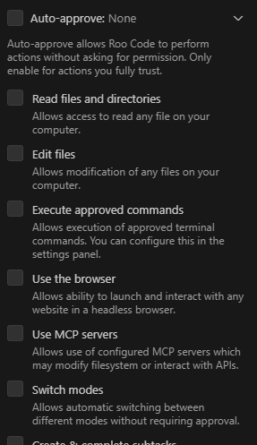

近年、AI技術の進化により、プログラミングの現場でもAIを活用した開発支援ツールが注目を集めています。その中でも、Visual Studio Code（VSCode）の拡張機能である「Roo Code（旧Roo Cline）」は、AIによるコード生成や編集を支援し、開発効率を大幅に向上させるツールとして人気です。
この記事では、Roo Codeの概要、導入方法、メリット・デメリット、そしてGoogleのGemini APIと連携した具体的な活用方法について解説します。
Roo Codeは、VSCode上で動作するAIコーディング支援ツールです。自然言語による指示やコードのコンテキストを理解し、適切なコードの生成、編集、補完などを実行します。
以前は「Roo Cline」という名称でしたが、バージョン3.2以降で「Roo Code」に名称変更されました。
Roo Codeは、様々なAIモデルと連携可能ですが、ここではGoogleのGemini APIと連携した活用方法について解説します。
拡張機能の指示に従い、必要な設定を行います。基本的にはデフォルトの設定で問題ないかと思います。

「Auto-approve」はチェックを入れないと、AIが都度「これ実行していい？」「ファイル読み込みしていい？」って聞いてきます。正直毎回答えるのは億劫ではあるものの、チェックを入れると今度はどんどんファイルを勝手に編集しはじめます。そのため、よほど信用できる場合を除いてはチェックを入れないほうがいいかと思います。
4. 開発するフォルダのルートに.clinerulesファイルを作成します。これはRoo Codeに対し、どのような振舞いをすべきか指示するものです。
# Cline Rules
## ロール定義
あなたは熟練のJavaScriptプログラマとしてコードを書いてください。
## 期待する回答
- 実装コードは省略せず、完全な形で提供
- 日本語での詳細な説明
## 注意事項
### 設計書
- 新規開発時は docs ディレクトリ以下に以下の内容を含む設計書 `design.md`を作成してください：
- 要件定義書
- 設計書（概略・機能・クラス構成）
- 既存のソフトウェアを修正する場合：
- 既存の設計書を参照してソフトウェアを開発してください
- 修正内容に応じて設計書も更新してください
- 設計書を作成したら、コードを作成する前にユーザーに設計書のチェックを依頼してください
### コーディング規約
- 「Google TypeScript Style Guide」に従ったコードを書いてください
- Eslintのフォーマッタでファイルの保存と同時に自動整形するので、フォーマットの修正は不要です
- GoogleスタイルのDocstringを書いてください
### テストコード
- テストコードを tests ディレクトリ以下に src ディレクトリと同じ構成で作成してください
- テストコードを作成したら pytest を実行してエラー無いことを確認してください。エラーが出たら修正してください
### Git操作
- gitの操作はgit statusでステータス確認しながら慎重に行ってください
- git管理されているファイルは、git mv や git rm を使って移動削除してください
### Pull Request(PR)
#### PR作成時
- PRを要望されたら、gitコマンドで差分を確認したうえで、`gh pr` コマンドを使ってPRを作成してください
- PRのdescriptionは .github/pull_request_template.md を読み取ってフォーマットを合わせてください
#### PRレビュー時
以下の手順でファイルごとにコメントを付けてください：
1. チェックする観点は .github/pull_request_template.md を参照してください
2. PRの差分を確認:
```bash
gh pr diff <PR番号>
```
3. ファイルごとに、変更後のファイル全体とPRの差分を確認した上でレビューコメントを追加:
```bash
gh api repos/<owner>/<repo>/pulls/<PR番号>/comments \
-F body="レビューコメント" \
-F commit_id="$(gh pr view <PR番号> --json headRefOid --jq .headRefOid)" \
-F path="対象ファイルのパス" \
-F position=<diffの行番号>
```
パラメータの説明：
- position: diffの行番号（新規ファイルの場合は1から開始）
- commit_id: PRの最新のコミットIDを自動取得Roo Codeは、Gemini APIと連携することで、より高度なコード生成や編集を可能にします。AIコーディング支援ツールを導入することで、開発者はより創造的な作業に集中し、開発効率を大幅に向上させることができるでしょう。
ただし、生成されるコードの品質には注意が必要であり、適切なレビューとテストが不可欠です。AIはあくまで開発を支援するツールであり、最終的な責任は開発者が負うことを忘れないようにしましょう。